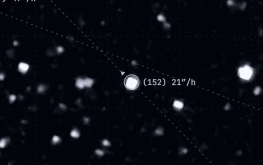
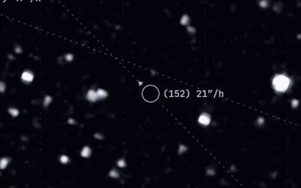
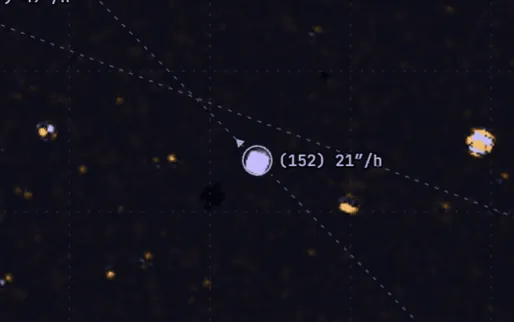
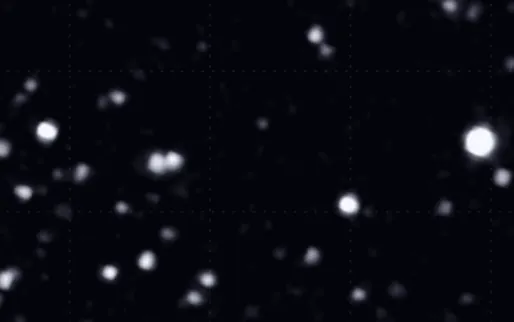
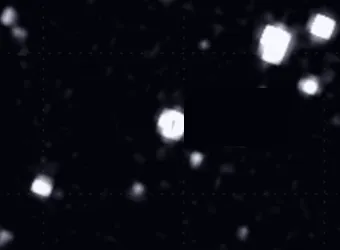
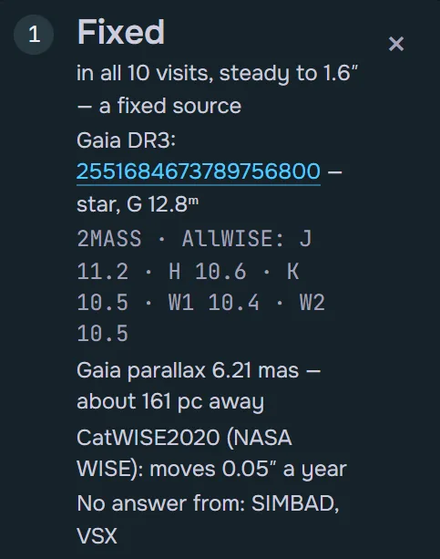
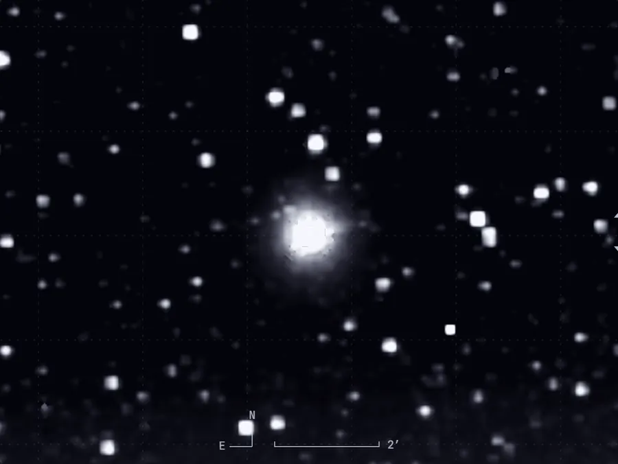
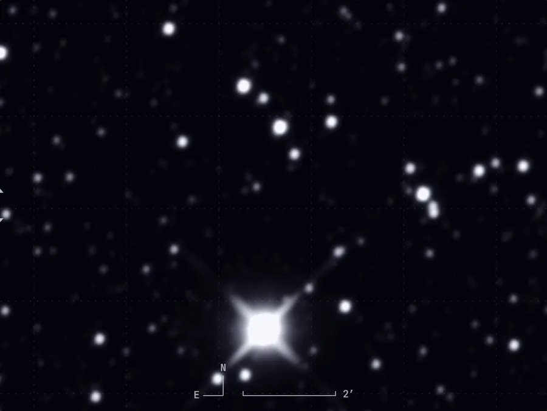

D1D2D3 D4D5D6 I II 01   A · 25.12.2025 B · 01.01.2026 02 NE 03   04 05   1 06 07 08 140 FLAGS = 0x45 = 1000101₂ bit 0TRANSIENT bit 2SUR_ERROR bit 6NONFUNC 09 D1 D2 D3 D4 D5 D6 10  11  A · SPHEREx 2025 B · WISE 2010 12 142026 13 14 1000500200100 A 1000 500 200 100 15 16